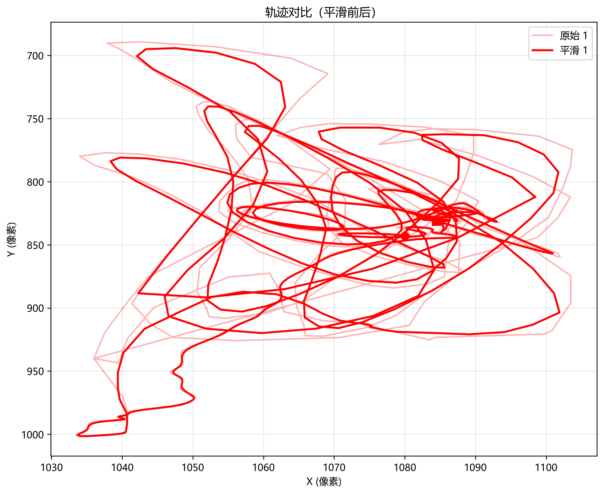
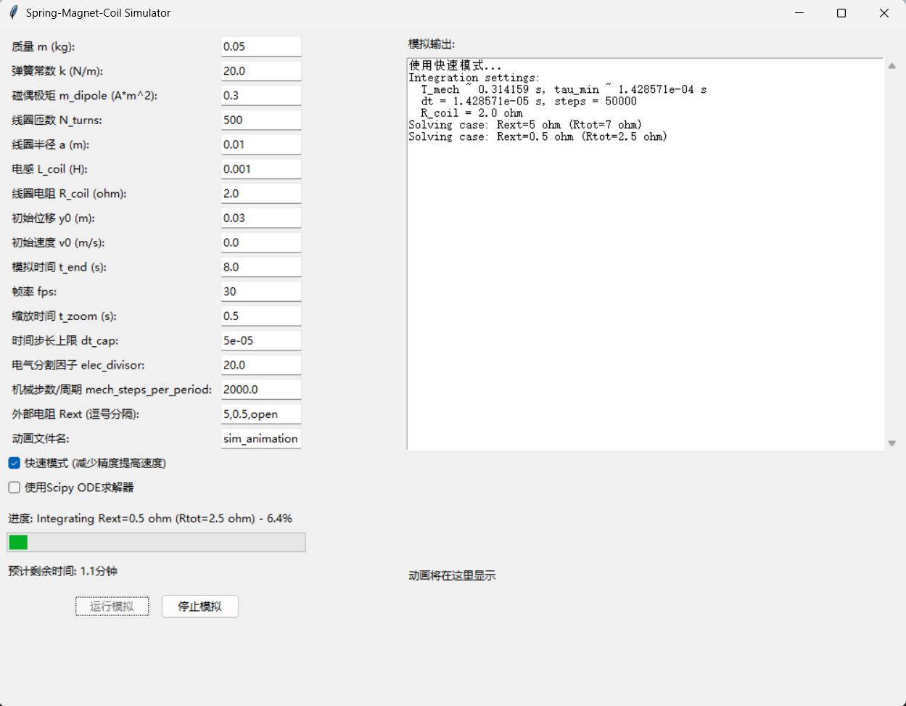

基于OpenCV的Tracker程序
基于 OpenCV 的标记物跟踪程序：命令行菜单可加载视频、标定坐标系、选择标志物并开始跟踪，含结果保存与阻尼系数分析；截图依次为程序界面、跟踪效果与轨迹图。
早期项目（Hexo 时期）LEGACY · 早期项目
这里展示的是早期用 Python 写的一些小工具，涵盖物理仿真、计算机视觉、流体力学和文档处理。它们大多没有开源仓库，这里保留当年的界面截图作为记录。
原文写「六个」，但页面只保留了实际存在的 5 个工具；统计按实际条目。

基于 OpenCV 的标记物跟踪程序：命令行菜单可加载视频、标定坐标系、选择标志物并开始跟踪，含结果保存与阻尼系数分析；截图依次为程序界面、跟踪效果与轨迹图。
早期项目（Hexo 时期）
把 DOCX 文档转换为 Markdown 的图形工具，可选择忽略图片或把图片以 base64 嵌入，界面带转换状态与进度条。
早期项目（Hexo 时期）
处理 Markdown 文档图片引用的图形工具：填入 SM.MS API Token 后按选项批量处理，可跳过已有图片、处理前备份原文件，并对 Base64 内容做校验与自动修复。
早期项目（Hexo 时期）

弹簧—磁体—线圈耦合的阻尼谐振子仿真（Spring-Magnet-Coil Simulator）：可调质量、弹簧常数、线圈参数与外部电阻，用数值积分求解并生成动画。
早期项目（Hexo 时期）

双摆动力学数值仿真：把物理空间轨迹与相空间、构型空间、速度空间画在一起，可对比大角度运动与微扰小角度两种情形。
早期项目（Hexo 时期）